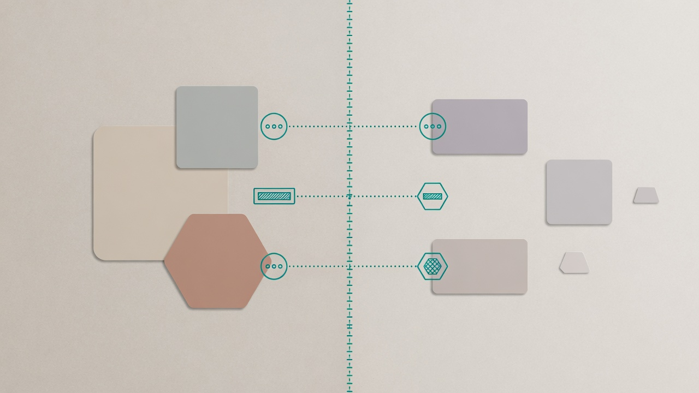

At LinkedIn, the Enterprise Data Platform (EDP) was meant to be the centralized way GTM teams managed and consumed datasets. On paper, that is a clear platform charter. In practice, a platform is only real when its interfaces get adopted — including by teams that already have a path that “works.” The hard case was BI. Power BI and Tableau teams were still living on Hadoop-based pipelines scheduled for deprecation. They could already get data. EDP was strategically important and still optional in their week. Without them, EDP could not become the source of truth for GTM analytics no matter how good the internals looked. That is an interface problem, not a cluster problem.

The interface was “how BI gets governed data”
When platform teams say interface, they often mean API shape or event schema. Here the consumer-facing interface was broader:
- How does a BI engineer get a trusted dataset into a dashboard workflow?
- Who pays the migration cost?
- What happens to the old path, and when?
- Is query performance acceptable the week after cutover?
EDP’s storage format and pipeline elegance did not answer those questions. Until they were answered, BI had no reason to reorder priorities. Lesson: product teams do not consume your architecture diagrams. They consume time-to-success, predictability, and whether the platform team shows up when the path is rocky.
Adoption failed as an org problem first
This was easy to misread as stubbornness. It was incentives.
- BI teams were measured on analytics delivery, not on platform migration.
- Legacy pipelines still produced outputs.
- Migration looked like unfunded work with downside risk (latency, rework, surprise breakage).
- EDP’s long-term governance story was real — and still abstract compared to this quarter’s dashboards.
Engineering alignment inside the data org was necessary and insufficient. Without a business framing, “please adopt EDP” is a favor request.
Executive sponsorship changed the type of conversation
I partnered with senior leaders on the data and BI side so EDP adoption was not a side quest. The useful reframe was not “modernize for us.” It was:
- Hadoop paths were going away.
- Continuing to depend on them was a continuity risk, not a neutral default.
- EDP was the consolidation path for governed GTM analytics — not a nice-to-have alternate store.
That shift moved the discussion from technical preference to operating risk. Platforms that cannot get that sentence said out loud usually stall in permanent pilot mode.
We lowered the price of yes
Even with sponsorship, asking BI to self-fund a migration would have failed slowly. The decision that mattered operationally: EDP engineers would take migration load — connectors, pairing, performance work — not only publish docs and wish for pull requests. Concretely, that meant:
- Pre-built paths into Power BI and Tableau so “get data from EDP” was not a research project.
- Shared work on query performance so cutover did not mean slower dashboards.
- A migration toolkit and recurring office hours to kill blockers in public, early.
- Alignment with sales and marketing stakeholders who depended on the outputs, not only the producers.
This is platform-as-product without the theater: the job-to-be-done was “keep GTM analytics working on a governed foundation,” and we priced the platform to make that job rational.
Deprecation is part of the interface
Enabling a new path without disabling the old one is how companies collect platforms. The adoption plan included the unglamorous half:
- Clear deprecation milestones for legacy Hadoop pipelines.
- Time-bound dual running where needed.
- A definition of done that included turning things off, not only turning EDP on.
Governance is not a slide about ownership. Governance is whether the abandoned path still quietly feeds production dashboards six months later.
What changed
Within a concentrated push — on the order of a quarter for the BI migration motion — Power BI and Tableau usage moved onto EDP for the scoped GTM paths we targeted. Redundant pipeline surface area could be decommissioned. Freshness and governance improved because fewer competing “sources of truth” were allowed to linger. I care less about the trophy phrasing than about the mechanism: sponsorship + funded migration + forced deprecation + BI-shaped interfaces.
Where EMs earn their keep on platform teams
The technical work was real. The EM job showed up in places that never appear in a system design doc:
- Spending team capacity on someone else’s migration so the company’s data model could converge.
- Holding a deprecation line when temporary extensions would have been easier.
- Making sure performance issues after cutover were our problem, not a gotcha that punished adopters.
- Translating platform risk into language executives will prioritize.
Special cases still existed — BI tools always have them — but they were absorbed into connectors and support rituals, not infinite private forks.
Closing
Platform teams love infrastructure. Infrastructure is not the job. The job is to define, evolve, and defend interfaces other teams can build on — including the incentives, migration labor, and deprecation schedule that make those interfaces real. EDP did not become the GTM source of truth when it launched. It became the source of truth when BI could succeed on it, and the old paths were allowed to die.
Comments
Sign in with GitHub to join the discussion.